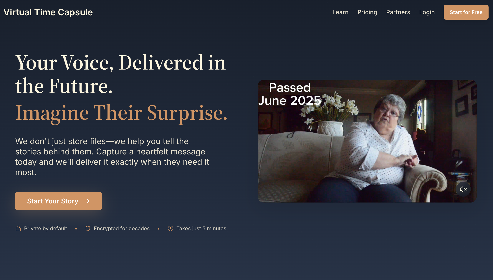
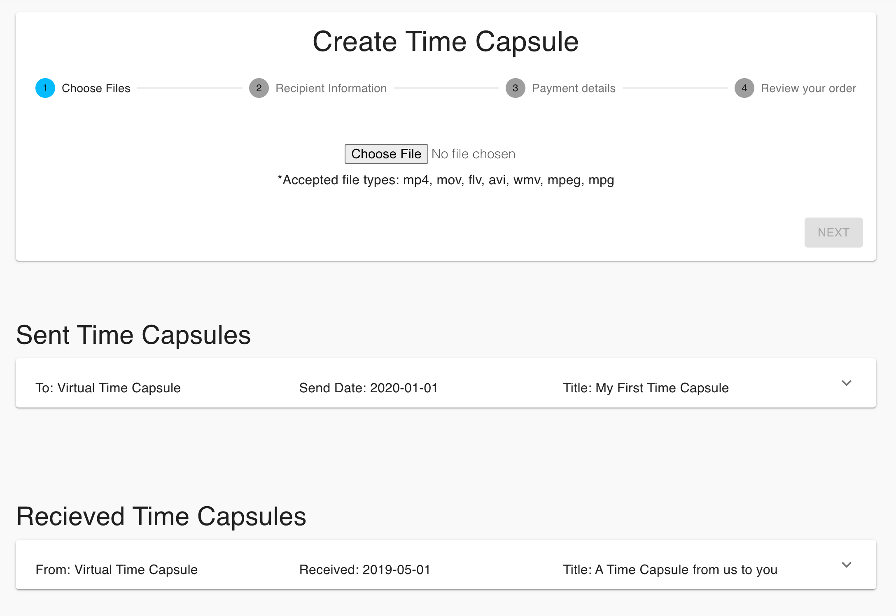
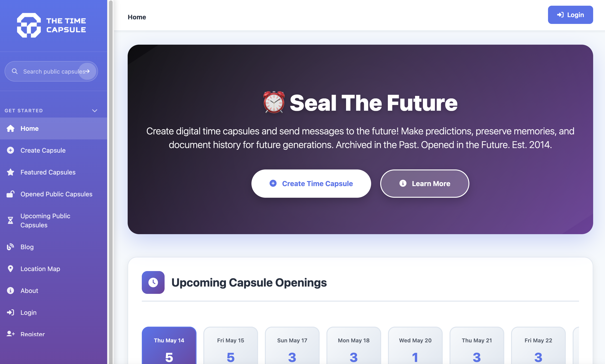
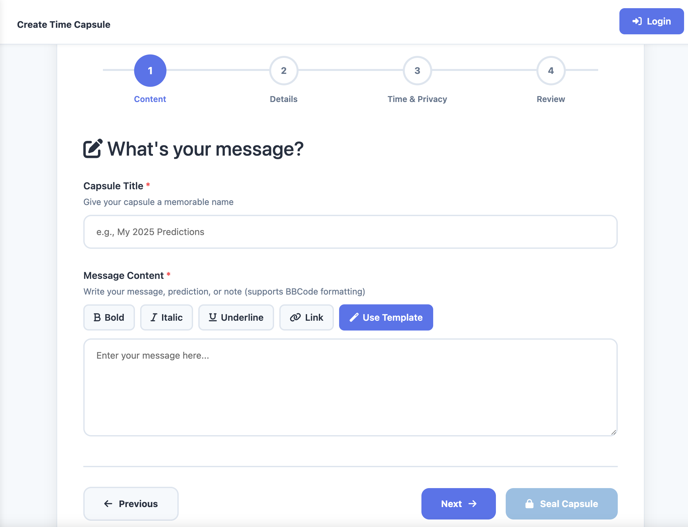
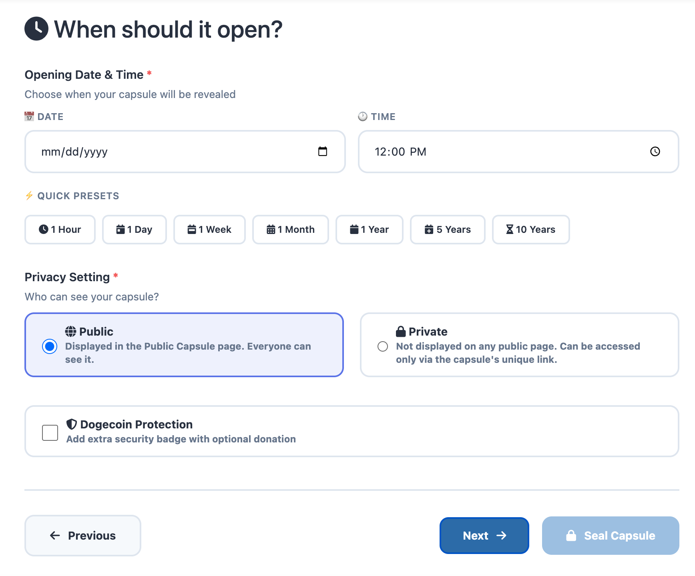

This time capsule is kind of more catered to family and legacy that feels like it can be passed through generations, which feels very meaningful. It is an interesting concept to explore to pass it to different people. However, I did notice that the design feels like it is selling something like a service, rather than something more personal and not an exchange. It feels like just another subscription, which I would want to avoid in my project. I want my project to feel more human and personal connection.



This website is a virtual time capsule that is more social and interactive between people. There is a public calendar of upcoming openings and the community feed that makes it feel like the site is very alive or active. I think it is an interesting idea to make it like social feed, but I want my project to stray away from the social media or attention grabbing apps. I want my project to be more personal, because in this example, they are so simple and easy to create that it feels like it loses its meaning a little. I think the design of the interface does feel friendly and welcoming and it feels intuitive to navigate. When I went through the process of creating a time capsule, it did feel like just a form that I was filling out, so I plan to have more guiding questions and allow the user to feel more meaning to this time capsule.